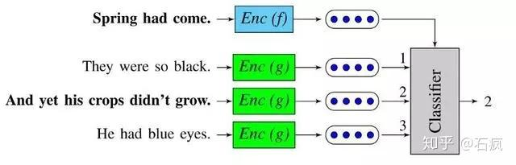

细数2018年最好的词嵌入和句嵌入技术¶
在任何一种基于深度学习的自然语言处理系统中，词嵌入和句子嵌入已成为重要组成部分。它们使用固定长度的稠密向量对词和句子进行编码，从而大幅提升通过神经网络处理文本数据的能力。
对通用嵌入的追寻是个大趋势：在大型语料库上预先训练好的嵌入模型，可以应用到多种下游任务模型中（情感分析，分类，翻译...），通过合并一些在较大的数据集上学习的常用词/句子表示，预训练的嵌入可以自然地提高其性能。
这是一种迁移学习。 最近，已经证实迁移学习能大幅提升NLP模型在很多重要的任务上的表现，例如文本分类任务。感兴趣可以进一步了解Jeremy Howard 和 Sebastian Ruder （ULMFiT）在这方面的杰出工作,以及它的实际应用。
研究工作: http://nlp.fast.ai/classification/2018/05/15/introducting-ulmfit.html
实际应用: http://ruder.io/word-embeddings-1/
虽然在相当长时间内，句子的无监督表征学习已经成为规范，但随着2017年末、2018年初一些非常有趣的方案被提出，近几个月，已经有向监督和多任务学习方案转变的迹象。
通用词/句子嵌入的趋势。在这篇文章中，我们描述了图中用黑体表示的模型。
本文简要介绍了目前普遍使用的、较先进的词和句子嵌入技术。详细介绍了：
强有效且快速的基线 ：FastText，Bag-of-Words(词袋模型)
较先进的模型 ：ELMo，Skip-Thoughts，Quick-Thoughts，InferSent，微软蒙特利尔研究院提出的「通用目的句子表征」和谷歌的「通用句子编码器」
如果你想对2017年之前发生的事情有一些背景知识，我推荐Sebastian Ruder去年写过的关于词嵌入的不错的帖子和他的简介帖子。
我们先从词嵌入开始。
1.词嵌入的发展¶
在过去的五年里，已经提出了大量可行的词嵌入的方法。 最常用的模型是word2vec和GloVe，它们都是基于分布假设（ distributional hypothesis）的无监督方法（出现在相似语境中的词往往具有相似的含义）。
Word2Vec：https://github.com/dav/word2vec/
GloVe：https://nlp.stanford.edu/projects/glove/
虽然有些研究工作通过结合对语义或句法知识的监督来增强这些无监督的方法，但在2017-2018年，纯粹的无监督方法获得了有趣的进展，最著名的是：FastText（word2vec的扩展）和ELMo（较先进的上下文词向量）。
传送门: https://arxiv.org/abs/1805.04032
FastText¶
FastText由Tomas Mikolov团队提出，word2vec框架也是他们在2013年提出的，FastText促进了对于通用词嵌入研究的爆炸式增长。
FastText对原始word2vec向量的主要改进是 包含基于字符的n-gram模型 ， 它允许计算没有出现在训练数据中的单词表示（“词外”字） 。
FastText矢量训练速度超快，可在157种语言的Wikipedia和Crawl训练中使用。 他们是一个很好的基准。
ELMo¶
最近，深层语境化词表征（ELMo）在较好的词嵌入技术基础上有了显著地提升。 它们由艾伦人工智能研究所开发，将于6月初在NAACL 2018展出。
ELMo知道很多关于文字的上下文
在ELMo中，每个单词被赋予一个表征，这个表征是它们所属的整个语料库句子的函数。 嵌入是从双层双向语言模型（LM）的内部状态计算出来的，因此名为“ELMo”：Embeddings from Language Models，基于语言模型的嵌入。
ELMo的特点：¶
ELMo的输入是字符而不是单词。 因此，可以利用子字词单元来计算有意义的表征，即使对于词典外的词（如FastText）也是如此。
ELMo是由biLMs若干层激活的连接 。 语言模型的不同层对单词上的不同类型信息进行编码 （例如， 词语标注由biLSTM的较低层完成预测，而词义消歧在较高层中更好地编码 ）。 把所有层连接起来， 可以自由组合各种文字表征 ，以提高下游任务的性能表现。
2.通用句嵌入的兴起
对于句子嵌入任务，许多解决方案都很有竞争力。 尽管像平均词嵌入这样的简单基线经常得出很好的结果，但一些新颖的无监督和监督方法以及多任务学习方法已于2017年末至2018年初被提出来，并且都有一些有趣的改进与提升。
让我们快速浏览目前研究的四种方法（如上文所述）：
简单的词向量平均基线
无监督方法
监督方法
多任务学习方案
该研究领域普遍的观点是：直接平均句子的词向量这个简单方法（所谓的词袋方法）能为许多下游任务提供强的基线。
Arora等人去年发表在ICLR上的工作详细介绍了计算这种基线的一个很好的算法。A Simple but Tough-to-Beat Baseline for Sentence Embeddings：选择的热门词嵌入技术，在线性加权组合中对一个句子进行编码，并执行一个通用组件移除（移除它们的第一主成分上的矢量）。 这种通用的方法具有更深入而强大的理论动机，它依赖于一个生成模型，该模型使用语篇向量上的随机漫步来生成文本（我们不会在这里讨论理论细节）。
Bag-of-Words¶
一个强大的词袋模型基线（甚至比Arora的基线更强）的方案是来自达姆施塔特大学的连接p-mean嵌入，你会在这里找到（感谢Yaser指出这个工作）。
Hugging Face对话框的词袋。 词袋模型弱化了词语的顺序关系，但保留了惊人数量的语义和句法内容 。 Conneau 等人在ACL2018发表的有趣见解。
Skip-thought vectors¶
该模型由基于RNN的编码器 - 解码器组成，该解码器被训练用于重建来自当前句子周围的句子。¶
除了简单的计算平均，第一个主要提议是使用无监督训练目标，这首先是Jamie Kiros和同事在2015年提出的Skip-thought vectors.
无监督方案将句子嵌入学习作为学习的副产品，以预测句子与句子间的内连贯或句子内从句与从句间的内连贯。这些方法可以（理论上）使用任何文本数据集，只要它包含以一致的方式并列的句子/子句。
Skip-thought vectors是学习无监督句嵌入的典型例子。它可以作为为词嵌入而开发的skip-gram模型的句子等同物：不是预测单词周围的词，我们尝试预测给定句子周围的句子。 该模型由基于RNN的编码器 - 解码器组成，该解码器被训练用于重建来自当前句子周围的句子。
Skip-thought论文中有一个有趣的见解是词汇表扩展计划：Kiros 等人通过学习RNN词嵌入空间与诸如word2vec之类的较大词嵌入之间的线性变换来处理在训练期间看不到的词。
Quick-thoughts vectors¶
Quick-thoughts vectors是今年在ICLR上发布的Skip-thought vectors的改进版。在这项工作中， 给定前面一句话来预测下一句话的任务被重新定义为一个分类任务：解码器被一个分类器所取代，该分类器必须在一组候选者中选择下一句。它可以被解释为对生成问题的区分性近似。
该模型的一个优势是其训练速度（与跳跃思维模型相比快一个数量级），使其成为开发大量数据集的有竞争力的解决方案。

Quick-thoughts 分类任务。 分类器必须从一组句子嵌入中选择以下句子。 来源：Logeswaran等人所著的「An efficient framework for learning sentence representations」
InferSent基于推理的有监督句子嵌入模型¶
长期以来，监督式句嵌入学习被认为能够提供比无监督方法更低质量的嵌入，但是这种假设最近已经被推翻，部分归功于InferSent结果的公布。
与之前详述的无监督方法不同，监督学习需要标注数据集来标注某些任务，如自然语言推理（例如成对句子）或机器翻译（带有成对翻译句子），它们也引出了具体任务的选择问题，以及高质量嵌入所需的数据集大小的相关问题。 我们在下一节和最后一节中讨论关于这些问题的更多信息，但在此之前，让我们先看看2017年发布的InferSent的背后原理。
因其简单的体系结构，使得InferSent成为一个非常有趣的方法。 它使用Sentence Natural Language Inference（NLI）数据集（包含570k对标有3种类别的句子：中性，矛盾和包含）来在句子编码器之上训练分类器。 两个句子都使用相同的编码器进行编码，而分类器则是根据两个句嵌入构建的对表征进行训练。 Conneau 等人采用了一个通过较大池化操作实现的双向 LSTM 作为编码器。
有监督句子嵌入模型（InferSent）从一个NLI数据集中学习。 此图来自 A.Conneau 等人所著的「Supervised Learning of Universal Sentence Representations from Natural Language Inference Data」
InferSent 的成功不仅导致了对选择较佳的神经网络模型的探索，它还引发了对以下问题的研究：
哪种有监督训练任务可以学习句嵌入，以便能更好地泛化到下游任务？
多任务学习可以看作是Skip-Thoughts、InferSent和相关的无监督/监督学习方案的泛化，它通过试图在一个训练方案中结合几个训练目标来回答这个问题。
2018年初，几个关于多任务学习的方案发布。让我们快速浏览一下 MI特利 尔微软研究院提出的「通用目的句子表征」和谷歌的「通用句子编码器」。
通用目的句子表征模型
在ICLR 2018发表的描述微软蒙特利尔研究院的工作（通过大规模多任务学习，学习通用分布式句子表示）的论文中，Subramanian等观察到，为了能够泛化句子表征到各种不同的任务，编码同一句子的多个层面是必要的。
因此，作者利用一对多的多任务学习框架，通过在多个任务之间切换来学习通用句子嵌入。 选择的6个任务【下一个/前一个句子的Skip-thoughts 预测，神经机器翻译，组别解析（constituency parsing）和自然语言推理】共享由双向GRU获得的相同句嵌入。 实验表明，通过添加多语言神经机器翻译任务，可以更好地学习语法属性；通过解析任务，可以学习长度和词序；通过训练自然语言推断，可以编码语法信息。
Google通用句子编码器
Google于2018年初发布的通用句子编码器采用相同的方法。 他们的编码器使用了一个迁移网络，该网络在各种数据源和各种任务上进行训练，目的是动态地适应各种自然语言理解任务。 TensorFlow提供了预先训练好的版本。
通用句子编码器: https://arxiv.org/abs/1803.11175
后记
以上就是我们关于通用词嵌入和句嵌入现状的简短综述。
在过去的几个月中，该领域已经有了很多有趣的发展，我们在评估和探索这些嵌入的表现以及它们内在的偏见/公正性（这是谈论通用嵌入时的一个实际的问题）方面也有了巨大进步。
我们没有时间讨论一些的主题，但您可以在参考资料中找到一些链接。
希望你喜欢这个简短的综述！
参考资料：
1.Hironsan 的 github 仓库：
https://github.com/Hironsan/awesome-embedding-models
2.FastText：https://fasttext.cc/
3.ELMo：http://allennlp.org/elmo
4.Skip-Thoughts 论文：https://arxiv.org/abs/1506.06726
5.Quick-Thoughts 论文：
https://openreview.net/forum?id=rJvJXZb0W
6.DiscSent 论文：
https://arxiv.org/abs/1705.00557
7.InferSent 论文：
https://arxiv.org/abs/1705.02364
8.MILA/MSR’s General Purpose Sentence Representations 论文:https://arxiv.org/abs/1804.00079
9.Google’s Universal Sentence Encoder 论文：
https://arxiv.org/abs/1803.11175
10.Google Input-Ouput Sentence learning on dialog论文：http://arxiv.org/abs/1804.07754
11.Facebook 的 SentEval 句子嵌入项目仓库:
https://github.com/facebookresearch/SentEval/tree/master/data/probing
12.SentEval 探索任务：
https://github.com/facebookresearch/SentEval
13.NYU、UW 和 DeepMind 的 GLUE(通用语言理解评估标准)：https://gluebenchmark.com/
原文地址:
https://medium.com/huggingface/universal-word-sentence-embeddings-ce48ddc8fc3a
凡本网注明"来源：XXX "的文/图/视频等稿件，本网转载出于传递更多信息之目的，并不意味着赞同其观点或证实其内容的真实性。如涉及作品内容、版权和其它问题，请与本网联系，我们将在第一时间删除内容！
作者: 石疯
来源： https://zhuanlan.zhihu.com/p/49951266